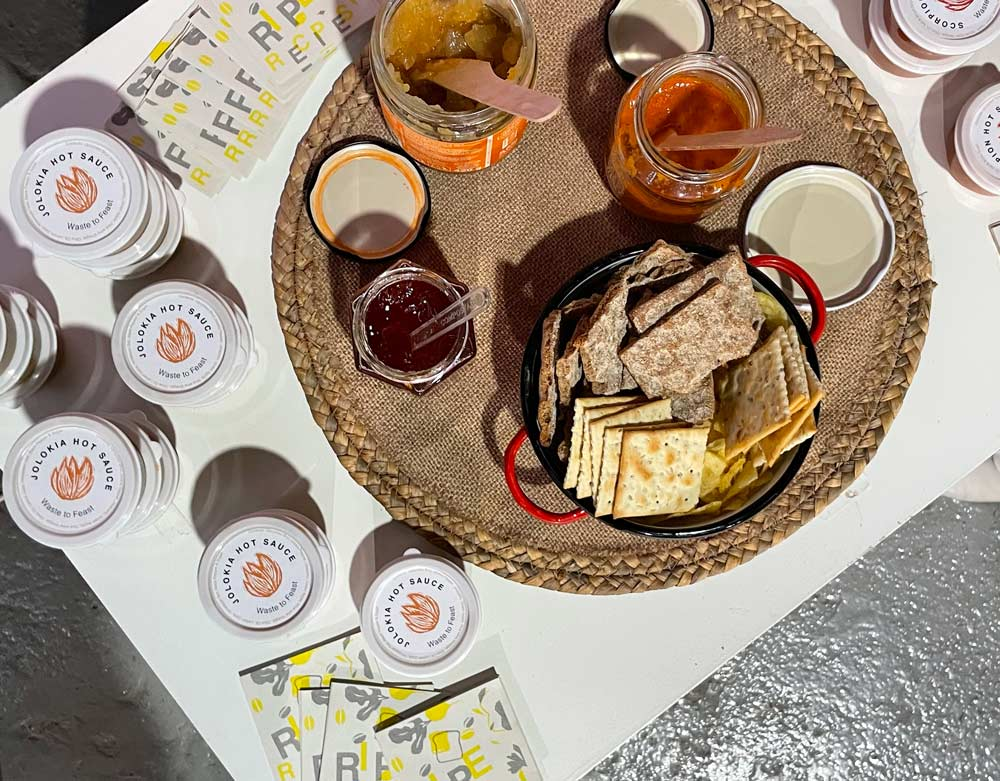

21 December 2021
This exhibition came as a summer breeze on the last sprint of the term. We were all really tired and stressed out preparing for the event, but when we arrived in the morning you could sense all the pride and happiness in the room. Everyone did an amazing job and it was great to have the opportunity to learn about other projects that I didn’t have the chance to do before. Design dialogues was more an exchange of ideas rather than an evaluation as we all thought it would be. We were divided into two groups to exhibit and visit others' projects.
Aprendizaje emocionante was one of the interventions I wanted to get to know more about. I don’t see myself working in design from the education perspective, nevertheless I acknowledge the importance of creating new ways of learning. I feel that is a way to connect all our processes since we are all on this trip of unlearning. Having a social approach to my project is crucial for me, but I see myself more as a confident or closer to a psychologist figure rather than a teacher.
My group intervention was Conversaciones Maduras, a workshop whose aim was to address and act on the negligence of food waste by closing a feedback loop. As a food cooking workshop we didn’t have many tangible results since we ate it all. Hence we decided to create a small intervention to exhibit our group, together with a video, website and recipe book for the visitors to have. Hot sauces were prepared for testing during design dialogues giving us again the opportunity to establish conversations about food waste and how to fight the issue. Proving that these rescued fruits and vegetables have a place back on the market, a branding for the hot sauces were created. We were really happy with the result and the interaction generated with the public.
Additionally, some of the members of the solar punk collective presented other individual projects that have been carried out during this term. I wanted to exhibit some of the results of the living with your own ideas experiment which I called, Farming the city. I received many compliments from my classmates and faculties for the well displayed results. Even though it was a project I very much enjoyed doing, it is not certain I would like to further develop it. I had interesting conversations about it but when it came to talking about further steps I decided to drive the conversation towards my new fight poster which I decided to represent as a New year's resolution list.
Bridge the gap between artisans and technology. I keep on thinking about crafts and ceramics, every time that I'm surrounded by it I feel at peace but at the same time I'm a very digital person and designer, who enjoys learning about new technologies and programming. I think that my figure as a designer could be placed in between these 2 worlds since I want to find apparently simple solutions to complex problems using technology. I’m still super interested in indeginous tech and how we could restore processes into a more technological output while learning from the past. I've been thinking a lot about the upcoming power cut that everyone talks about… I would like to investigate more about self sufficient energy for cooking bringing back ancient cooking techniques used in many cultures with ceramic tools. What if we could cook with a self-sufficient pot? A more inclusive way of cooking?
Intercommunity collaboration is an approach in which I truly believe is key for my career. I had very interesting conversations with Mariana, where I explained to her my vision of a Social Restaurant - Studio. In this long live project, I envision myself and my classmates running a zero waste project where many of us could take part. I would like to have a shared hydroponic farm to cultivate the food that we would cook together. Using all kinds of ¨not-good enough¨ products, high quality meals would be cooked to be savored by the customers. Every bill would include a percentage destined to elaborate a same range dinner for disfavored people who usually eat in social cantienes. Once or twice a month the opportunity to fully enjoy a beautiful dinner as anyone else would be held for them and even have the chance to dress with nice clothes thanks to collaborating with other NGOs. We could make biomaterials. There would be space for workshops, alternative foods, ceramics, compost, music,... you know dreaming is free and everything sounds too ambitious but what I’m trying to find is the purpose of our projects in the real world.
Additionally, it was really fruitful to talk with Guillem about my ideas, he encouraged me to follow this idea and keep looking for alternative business models that would be placed between conventional capitalism and naive altruism. How we could connect communities and NGOs to have benefits at the same time that they help others? What company would be in the middle of Glovo and a soup kitchen?
Getting closer to the end of the day Jeremy and Angel passed by my stand and we realized that we share common interests. Jeremy also wants to work on the emergence of alternative systems of communities. He created the Emergence playground intervention where simulate how different communities interact with each other and how a bunch of communities form a higher order collective of communities. Angel is also very interested in ceramics and creating new tools as well as using technology to to support the people and the planet. Overall I think I ended up having meaningful conversations and possible areas of collaboration emerged with different classmates that I haven't had the chance to collaborate with before.